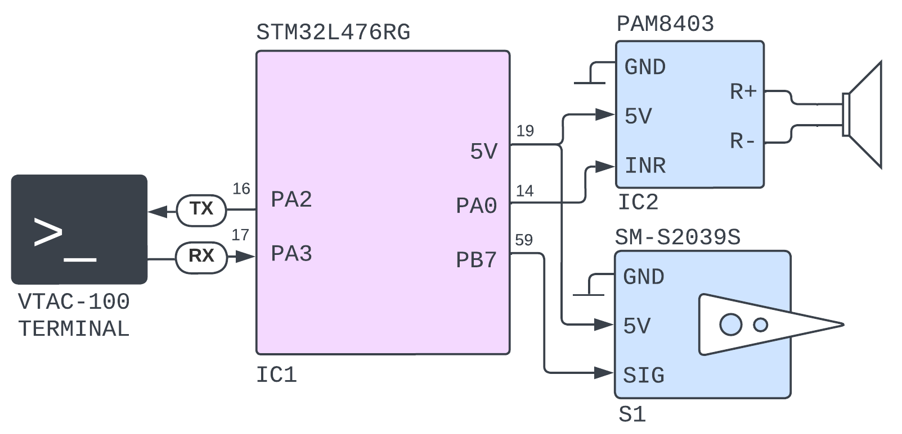
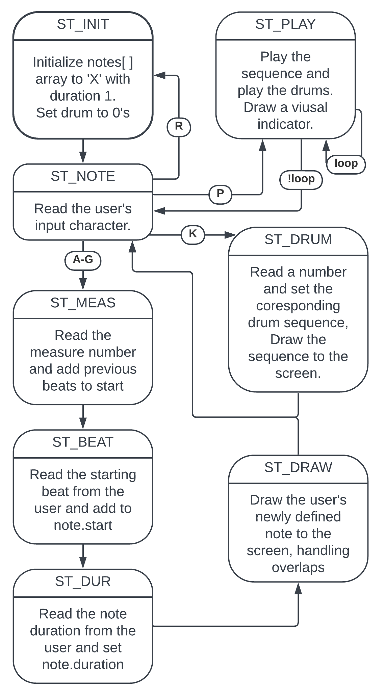
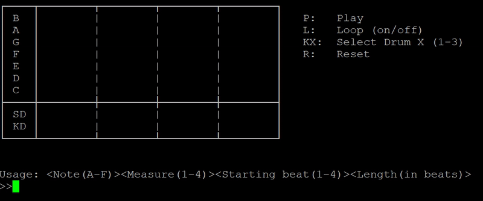

The BeatBox Project
For my Microcontrollers final design project, I made the BeatBox. Controlled by an STM32-Nucleo board, the BeatBox is a simple to use terminal-interfacing device for making simple four measure beats in the key of C with accompanying drum kit tracks. The BeatBox is designed for modular usage, with the user able to select sounds for their drumkit simply by choosing from household objects like water glasses and boxes. Multiple features increase usability, like looping, screen reset, and three selectable preset drum kits.
The Hardware

Shown above, the STM32 interfaces over UART through the RX and TX pins, while the speaker and servo are controlled via GPIO PWM. Both devices are powered using a 5V connection, and hopefully future iterations of the project will be battery powered for remote operation.
Software Architecture

The program uses a finite state machine (FSM) to manage user input, playback, and display coordination. It communicates via UART at 115,200 baud rate, supporting VT-100 escape codes for an interactive terminal interface. The process of adding notes is relatively straightforward. As the user enters the notes in the form [Note][Measure][Start][Duration], the program creates a Note (a struct) and checks to see if that new note would interfere or overlap any existing notes. If it doesn't, it adds the note to the list of all notes and draws the coresponding block characters onto the screen as shown in below.

Additionally drum kits can be added by cycling through K1-K3, each with their own unique sound. While chosen out of convenience, the servo was a non-ideal choice for a drum. Not only is the servo slow to react to changes in position (without the risk of stripping the gears), but it has limited range of motion meaning it is not able to generate nearly the volume that might be expected of a proper drum kit. Nevertheless, the following demonstration does show it playing kit two, on a water glass and empty box.
Video Demo
The code for this project should be up on my GitHub soon, but here is a link to the report which includes the code and a user manual.